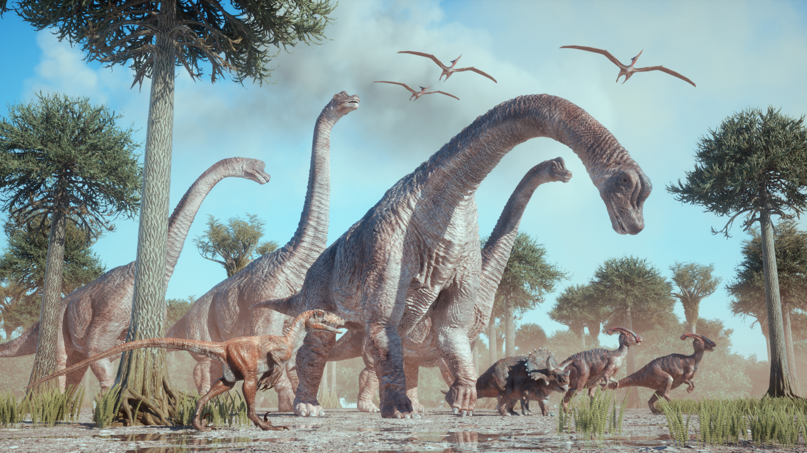

The Age of Dinosaurs
The Jurassic Period (201–145 mya) was when dinosaurs thrived, forests spread, and the first birds appeared.
Archaeopteryx lived during the late Jurassic, showing both dinosaur and bird traits.
It had feathers and wings, but also teeth and claws.
Large sauropods like Brachiosaurus were among the biggest animals to ever live on land.
Predators such as Allosaurus dominated the food chain.